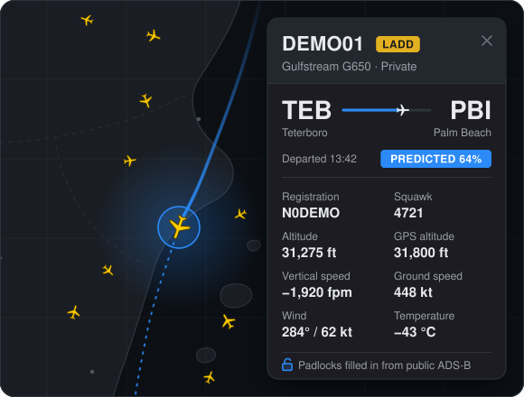

Every blocked flight, named
Anonymous FR24 flights are matched to the transponder they really are. The shared monitor watches FR24's whole map, so flights over oceans, deserts and on the ground are named before you even look.
A browser extension for Flightradar24. It names the flights FR24 hides or shows as "N/A", adds their route, owner and history, and fills in the figures FR24 keeps behind a padlock, all from public ADS-B data.

Written into FR24's own data before FR24 draws it, so blocked aircraft look like ordinary traffic.
Anonymous FR24 flights are matched to the transponder they really are. The shared monitor watches FR24's whole map, so flights over oceans, deserts and on the ground are named before you even look.
The take-off airport comes from the track. The destination is predicted by an explainable engine, with a probability and the reasons. It is only "Confirmed" when the aircraft is lined up on a runway.
Each blocked aircraft's departures and arrivals are kept for good. They appear in FR24's own "Recent flights", its aircraft pages and its playback, where blocked flights are named from the monitor's archive.
A yellow LADD, PIA or MIL tag on every aircraft it applies to: in the panel, in search and on airport boards.
Blocked flights on arrival and departure boards worldwide, without false "same-airport" flights from taxiing aircraft. Movements per day, runway usage, every runway in full and the radio frequencies, where FR24 shows a padlock.
The fields FR24 shows behind padlocks, filled from public ADS-B for any aircraft: vertical speed, squawk, GPS altitude, airspeeds, Mach, wind, temperature and airspace. The server and the browser share the polling.
The shared monitor listens all the time and worldwide, which a browser tab cannot do. Your browser reacts instantly to what is on screen, which the server cannot.

A small always-on server. Every copy of the script uses the shared public one by default.
The extension or userscript, inside the FR24 tab.
The engine scores every plausible airport, plus the hypothesis "a local flight returning home", on transparent, weighted evidence:
The result is a probability per airport, with the reasons in the tooltip. "Confirmed" is reserved for an aircraft established on a runway's final approach, which is right 99.8% of the time on held-out data. Full details: architecture.
Use one or the other, not both at once. If you switch to the extension, turn the userscript off in your userscript manager.
For Google Chrome, Microsoft Edge and Brave (and other Chromium browsers, version 111 or later).
Get the extension zip from the latest release and unzip it to a folder you'll keep.
Before the first release is tagged, take it from the repository instead.
Open chrome://extensions, switch on Developer mode, click Load unpacked and choose the unzipped folder.
Edge: edge://extensions · Brave: brave://extensions
Open flightradar24.com. That's it: blocked flights appear named, with nothing else to set up.
For any browser with a userscript manager such as Tampermonkey or Violentmonkey, Firefox included.
Install Tampermonkey or Violentmonkey from your browser's add-on store.
Open the userscript. Your userscript manager offers to install it.
If your manager asks you to allow the data hosts, allow them (once each).
Every copy of the script connects to the shared public monitor by default, so it knows every blocked flight worldwide from the moment FR24 opens, along with each aircraft's history. There is nothing to set up.
To turn it off, or point it at your own monitor, open any aircraft's panel, click sources on the strip under the photo, and use the Monitor row. An address and secret you enter there stay in your browser. Turned off, your browser identifies what it sees on its own.
Your own monitor is a single Node.js program (version 18 or later) with no dependencies. A free Oracle Cloud VM with 1 GB of RAM is enough.
node monitor/monitor.cjs # try it locally: listens on 127.0.0.1:47524
bash monitor/vm-setup.sh # on a server: systemd service, compressed HTTPS via Caddy
bash monitor/deploy.sh # later: update, verify, roll back automatically on failureConfiguration, every endpoint and day-to-day operation: docs/monitor.md.
Download the new zip, replace the folder's contents, and click ↻ Reload on the extension's card.
Open the new userscript file again.
Every change is in the changelog, and every tagged version on the Releases page.
No. It works with a free account or none at all. It uses no paid feature and no one's login.
Blocked flights have no public flight plan. The destination is worked out from the evidence and shown with its probability. It turns "Confirmed" only on final approach to a runway. The tooltip lists the reasons.
No. Background work runs in short slices while the browser is idle, and pauses while you drag or zoom the map. Main-thread stalls are measured on every change to the map path.
No. Every copy connects to the shared public monitor by default. You can turn it off, or use your own instead, in the sources menu.
The extension carries on by itself, asking adsb.lol and adsb.fi directly. It keeps the last names it was given for six hours.
It is made for desktop browsers (Chrome, Edge, Brave, or any browser with a userscript manager). It has not been tested on phones.
It is built to be. Aircraft broadcast ADS-B openly, by law. The project uses only data that community networks and public registers already publish. It changes only what your own browser shows you. The reasoning, and its limits, are in the legal notes.